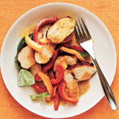
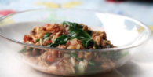
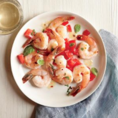
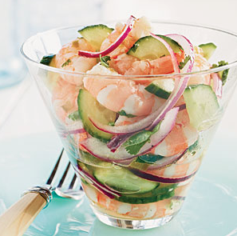
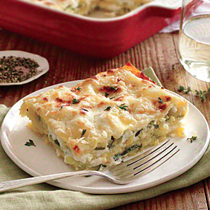

MY RECIPES
Curried Chicken Saute
$12 / plate | | Difficulty: Medium | Prep Time: 25 mins
This easy 5-ingredient (plus salt and pepper) chicken dish is all cooked in one skillet and takes less than 25 minutes. Curry powder and coconut milk are all you need to maximize the flavor of boneless chicken breasts and bell peppers.
Beef Orzo Skillet
This Greek-style dish is simple to make and everything goes together in one pot for easy clean-up.
Spicy Tomato-Basil Shrimp
Turn up the heat with this quick and easy shrimp dish. Perfect for summertime festivities.
Curried Chicken Saute
This easy 5-ingredient (plus salt and pepper) chicken dish is all cooked in one skillet and takes less than 25 minutes. Curry powder and coconut milk are all you need to maximize the flavor of boneless chicken breasts and bell peppers.
Shrimp Ceviche
This tasty peruvian treat is simple to make and everything goes together in one bowl. No cooking required.
Veggie Lasagna
This a one-dish meal that can be made a day ahead. It works well with extra veggies mixed in, too!
